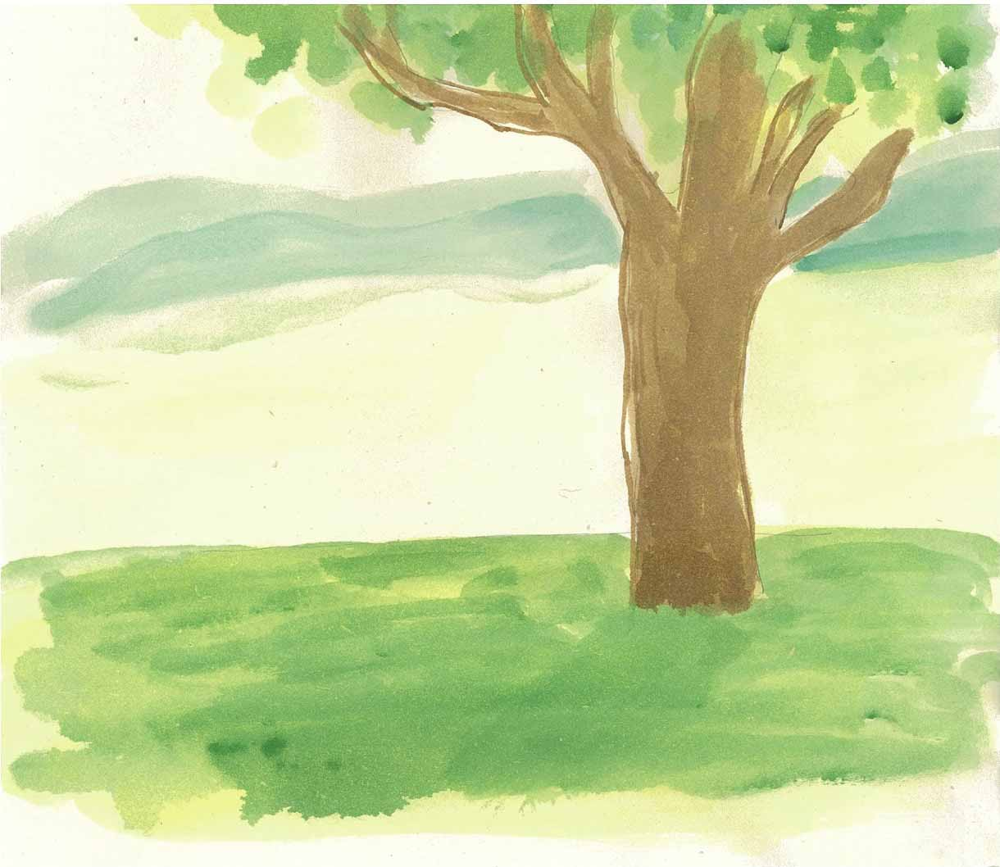
小文，这里我们说说盛产数学家的瑞士伯努利家族（Bernoulli Family），这个家族三代产生了八个数学家。八个数学家又留下一大群天资过人的后代，在这些庞大的后裔中，从事数学研究的就有一百多人。
不过看起来他们并不是有意选择数学作为职业，他们很多人一开始选择的职业或者是医生，或者是律师之类，也许是遗传基因在作怪的缘故，他们在偏离数学家的成长道路后不久，不由自主地又回到数学这个圈子，同时又成了这个圈子里的优秀人物。
这一大群的数学家也留下了一堆有趣的故事。比如雅科布Ⅰ，因为醉心于螺线（对数螺线或等角螺线）的神奇变换，吩咐在他的墓碑上也刻上一对螺线；对于约翰Ⅰ，当他知道他的儿子赢得了法国科学院的一项奖金，作为父亲他不是满心欢喜，而是将儿子赶出家门，因为他自己也申请了这笔奖金，儿子抢了老子的奖金，哼……
不过，小文，这里我们先把这些故事放一边，我们先看看这张伯努利家族的家谱图。
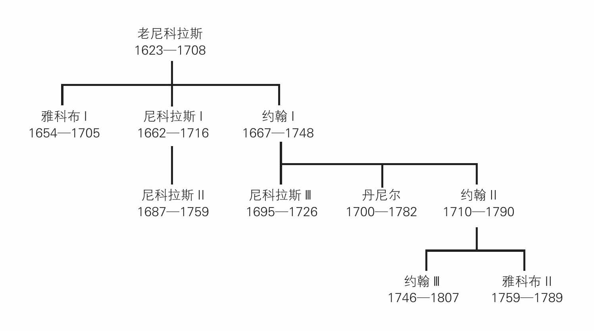
如果把其中的每位伯努利用点表示，这张家谱图就变成了这个样子：
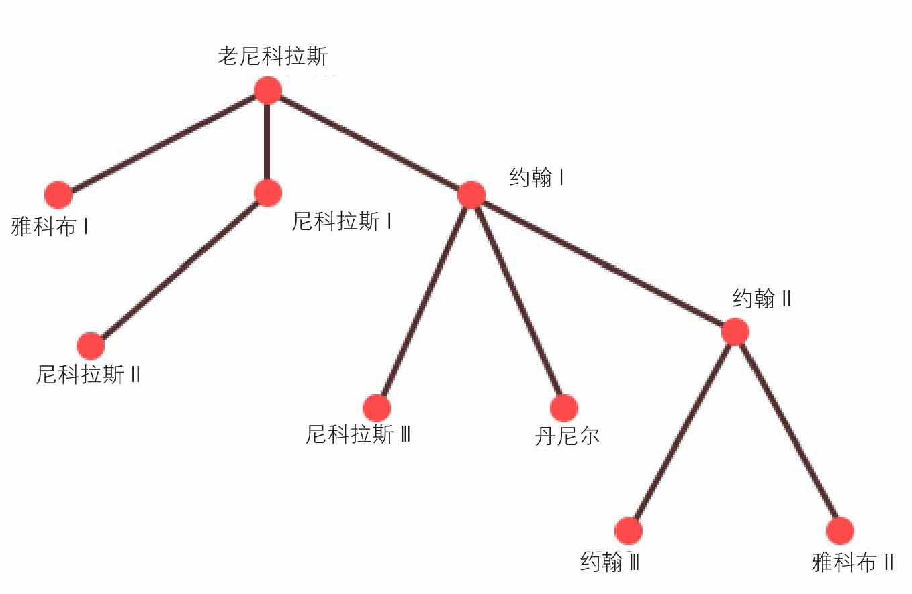
这份家谱图还可以像树一样往“下”一直长，所以类似这样的家谱图很多时候也叫“家族树”。
现实生活中的树随处可见，有的树，玉树临风，有的树，树大招风。上面介绍的伯努利家族树在图论中属于一类特殊的图，也称为“树”。说起来，图论中的“树”也跟一个数学家有关系（这是必然的，对吗？哈哈），这个数学家叫凯莱（Arthur Cayley），前面其实也提到过，这里正式地介绍一下，看看这一位数学家的生活。
“很难给现代数学的广阔范围定义一个明确的概念。‘范围’这个词不确切：我的意思是指充满了美妙细节的范围——不是一个像一马平川那样单调乏味的范围，而是像一个从远望去辽阔的美丽乡村，它能经得起人们在其中漫步，详细研究一切山坡、峡谷、小溪、岩石、树木和花草。但是，正如一切美好的事物，数学理论也是如此——美，只能意会而不能言传。”
——凯莱（Arthur Cayley）
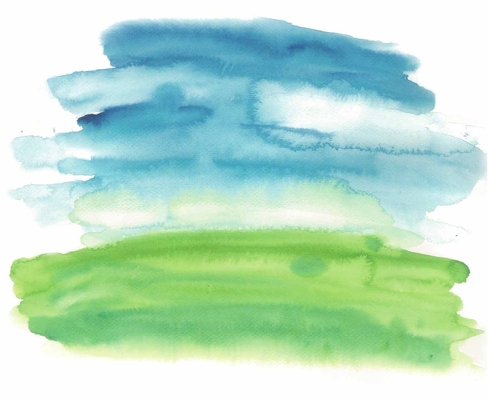
这段具有诗情画意的话，引自凯莱担任英国科学促进协会主席的就职演说，也可能是他某次登山或在美丽乡间漫步过程中的亲身感悟。他喜欢徒步旅行、登山，他看上去单薄瘦弱，其实他体质强健。跟哈密顿一样，凯莱也喜欢文学，喜欢简·奥斯丁、拜伦、莎士比亚，他终身对小说兴趣浓厚，还喜欢画水彩画。
爱好广泛的凯莱大学毕业了，这位被老师们公认为“第一名之上”的数学天才，选择的职业却是律师。他一边干着枯燥的律师事务，一边写着数学论文。
据说有一次，他正在办公室和朋友讨论数学中的一个问题，仆人进来了，捧着一大堆法律文件，他口里诅咒了一句，把那堆“该死的垃圾”扔在了地板上，接着与朋友谈论他的数学。但这样的场合并不多，凯莱一生很少发脾气，他总能安排有序，在十四年的律师生涯中，他写了几百篇数学论文，作为一个成功的律师，他被归为一流数学家的行列。
1863年，在凯莱42岁的时候，剑桥大学设立了一个新的数学职位给凯莱，凯莱接受了这份报酬低于律师的工作。
回到正题——我们的“树”。凯莱接受剑桥大学数学职位的6年后，开始着手研究碳氢化合物（由氢原子和碳原子组成），他特别研究了具有n个碳原子和2n+2个氢原子的饱和碳氢化合物，它们的分子式是这样的：CnH2n+2。
凯莱认为，每个氢原子将与另外一个原子结合，而每个碳原子将与另外4个原子结合，CnH2n+2中n可以等于1，2，3，4，我们现在知道它们分别叫作甲烷、乙烷、丙烷和丁烷，这些化合物的分子式可以用图形来表示，分子式的图模型具有这样一个共性：连通并且没有回路（所谓连通，是指任意两个点之间有路径相连；所谓回路，是指起点和终点重合的路径，我们这里的回路是指这条路径中，除了起点和终点外，其余的点不相同，所有边也各不相同）。
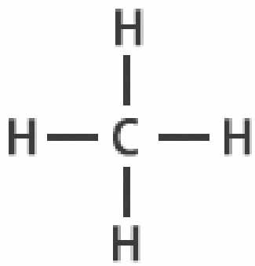
甲烷
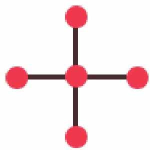
甲烷的树模型
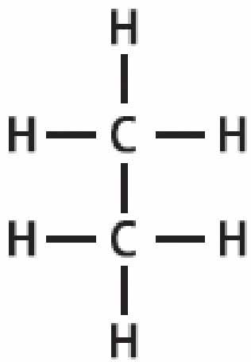
乙烷
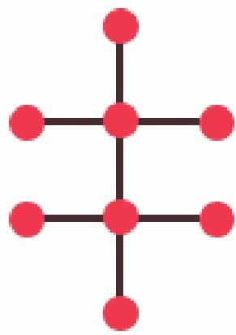
乙烷的树模型
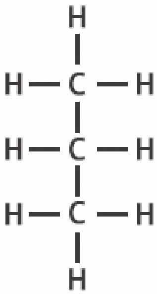
丙烷
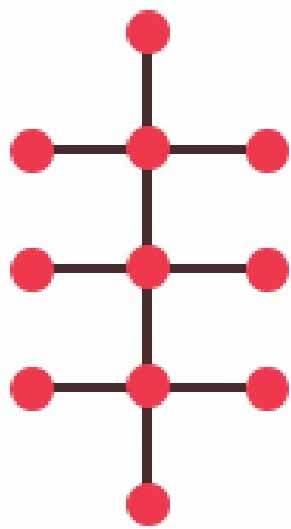
丙烷的树模型
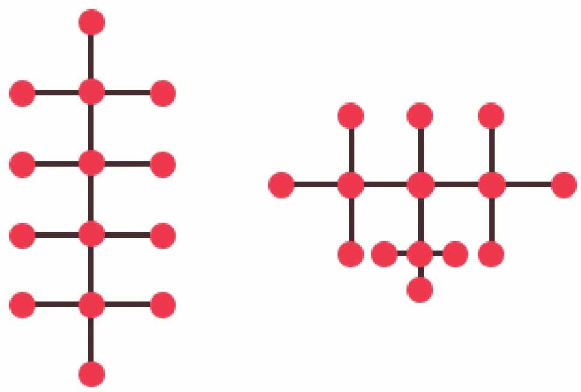
丁烷C4H10的两种同分异构体的树模型
凯莱将它们称为“树”，这样的命名是否来自凯莱某次户外登山的灵感不得而知，但也恰如其分。
小文，试一试，在一棵树中去掉一条边，你会发现去掉一条边（任意一条边）后，就会有“树叶”或“树枝”从树上掉下来，这样图就不再连通了！
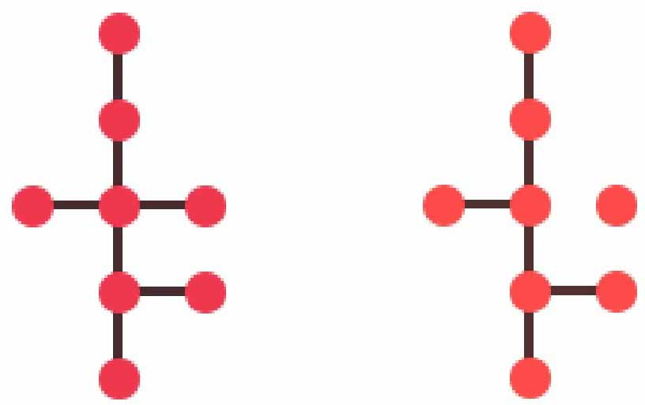
左边的树去掉一条边后，变得不连通
如果在一棵树的任意两个点之间增加一条边，所得到的图就会存在回路，也就是说，就不再是一棵树了！
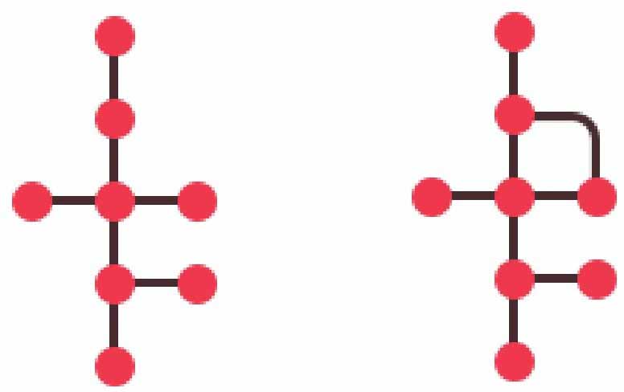
左边的树中增加一条边就会得到回路
树是一类特殊的图，树中度为1的结点我们把它称为树叶。
下面的树有8个结点，而边有7条。
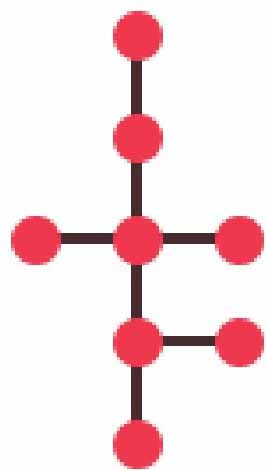
下面的树有12个结点，而边有11条。
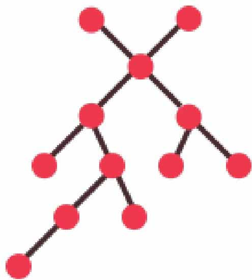
不信的话你可以再多画一些其他的树，你会发现这样一个规律：一棵树，它的边数总比结点数少一个，也就是具有n个顶点的树恰好有n-1条边——所有的树都满足这个规律。